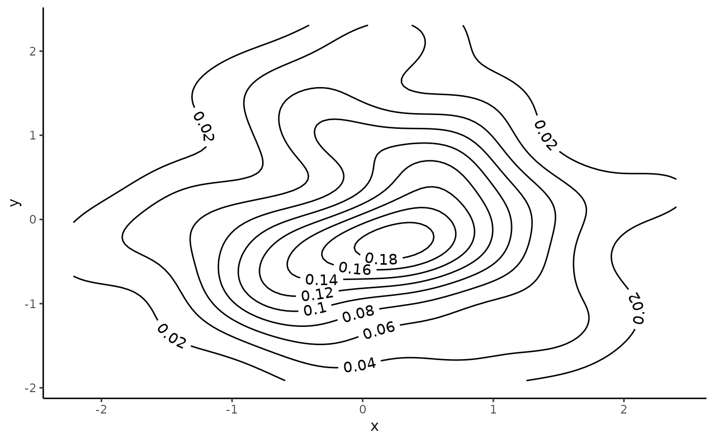

Produce labelled contour lines of 2D density in ggplot2
Source:R/geom_textdensity2d.R
geom_textdensity2d.RdContour lines representing 2D density are available already in
ggplot2, but the native geom_density_2d
does not allow the lines to be labelled with the level of each contour.
geom_textdensity2d adds this ability.
Usage
geom_textdensity2d(
mapping = NULL,
data = NULL,
stat = "density_2d",
position = "identity",
...,
cut_path = NA,
flip_inverted = TRUE,
offset = NULL,
keep_straight = FALSE,
padding = unit(0.15, "inch"),
contour_var = "density",
n = 100,
h = NULL,
adjust = c(1, 1),
lineend = "butt",
linejoin = "round",
linemitre = 10,
na.rm = FALSE,
show.legend = NA,
inherit.aes = TRUE
)Arguments
- mapping
Set of aesthetic mappings created by
aes()oraes_(). If specified andinherit.aes = TRUE(the default), it is combined with the default mapping at the top level of the plot. You must supplymappingif there is no plot mapping.- data
The data to be displayed in this layer. There are three options:
If
NULL, the default, the data is inherited from the plot data as specified in the call toggplot().A
data.frame, or other object, will override the plot data. All objects will be fortified to produce a data frame. Seefortify()for which variables will be created.A
functionwill be called with a single argument, the plot data. The return value must be adata.frame, and will be used as the layer data. Afunctioncan be created from aformula(e.g.~ head(.x, 10)).- stat
The statistical transformation to use on the data for this layer, as a string.
- position
Position adjustment, either as a string, or the result of a call to a position adjustment function.
- ...
other arguments passed on to
layer(). These are often aesthetics, used to set an aesthetic to a fixed value, likecolour = "red"orsize = 3. They may also be parameters to the paired geom/stat.- cut_path
A
logical(1)which ifTRUEbreaks the path into two sections, one on either side of the string. IfFALSE, the path is plotted as a whole. The default,NA, will break the line if the string has avjustof between 0 and 1.- flip_inverted
A
logical(1)which ifTRUE(default), inverts any string where the majority of letters would be upside down along the path are inverted to improve legibility. IfFALSEletters are left as-is.- offset
A
unit()of length 1 to determine the offset of the text from the path. If notNULL, this overrules thevjustsetting.- keep_straight
a
logical(1), which ifTRUE, keeps the letters of a label on the same, straight baseline and ifFALSE(default), lets individual letters follow the curve. This might be helpful for noisy paths.- padding
A
unit()of length 1 to determine the padding between path and text when thecut_pathparameter trims the path.- contour_var
Character string identifying the variable to contour by. Can be one of
"density","ndensity", or"count". See the section on computed variables for details.- n
Number of grid points in each direction.
- h
Bandwidth (vector of length two). If
NULL, estimated usingMASS::bandwidth.nrd().- adjust
A multiplicative bandwidth adjustment to be used if 'h' is 'NULL'. This makes it possible to adjust the bandwidth while still using the a bandwidth estimator. For example,
adjust = 1/2means use half of the default bandwidth.- lineend
Line end style (round, butt, square).
- linejoin
Line join style (round, mitre, bevel).
- linemitre
Line mitre limit (number greater than 1).
- na.rm
If
FALSE(default), missing points or labels are removed from the text path with a warning.- show.legend
logical. Should this layer be included in the legends?
NA, the default, includes if any aesthetics are mapped.FALSEnever includes, andTRUEalways includes. It can also be a named logical vector to finely select the aesthetics to display.- inherit.aes
If
FALSE, overrides the default aesthetics, rather than combining with them. This is most useful for helper functions that define both data and aesthetics and shouldn't inherit behaviour from the default plot specification, e.g.borders().
Aesthetics
geom_text_density2d() understands the following aesthetics (required aesthetics are in bold):
xyalphaanglecolourfamilyfontfacegrouphjustlinecolourlineheightlinetypelinewidthsizespacingvjust
The `spacing` aesthetic allows fine control of spacing of text, which is called 'tracking' in typography. The default is 0 and units are measured in 1/1000 em. Numbers greater than zero increase the spacing, whereas negative numbers decrease the spacing.
Learn more about setting these aesthetics
in vignette("ggplot2-specs").
Examples
set.seed(1)
df <- data.frame(x = rnorm(100), y = rnorm(100))
ggplot(df, aes(x, y)) +
geom_textdensity2d() +
theme_classic()
